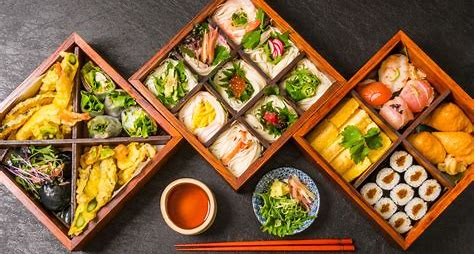
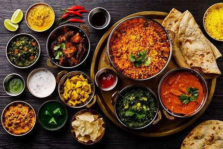

italian Food

Italian cuisine is a Mediterranean style of cooking known for its simplicity, fresh ingredients, and rich flavors. It emphasizes pasta, olive oil, tomatoes, garlic, and fresh herbs like basil and oregano. Dishes often include regional cheeses, cured meats, seafood, and bread, with popular items like pizza, risotto, and gelato. Each region in Italy has its own specialties, reflecting local traditions and ingredients.
japanese cuisine
Japanese cuisine is known for its emphasis on seasonal ingredients, balance, and presentation. It features rice, seafood, soy-based products (like tofu and miso), and vegetables. Popular dishes include sushi, sashimi, tempura, ramen, and bento boxes. Japanese meals often highlight umami (a savory taste) and are typically low in fat, with careful attention to texture and visual appeal.
indian cuisine
Indian cuisine is diverse and rich in flavor, known for its bold use of spices, herbs, and aromatic ingredients. It varies widely by region but commonly includes rice, lentils (dal), flatbreads (like roti or naan), and a variety of vegetarian and meat curries. Signature spices include turmeric, cumin, coriander, garam masala, and chili. Indian food often balances flavors like sweet, sour, spicy, and savory in a single dish..
